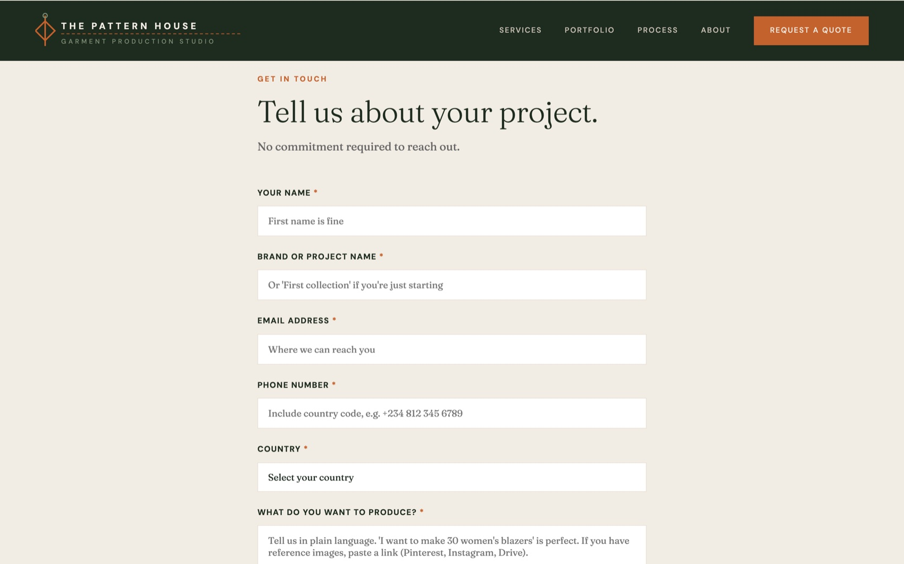
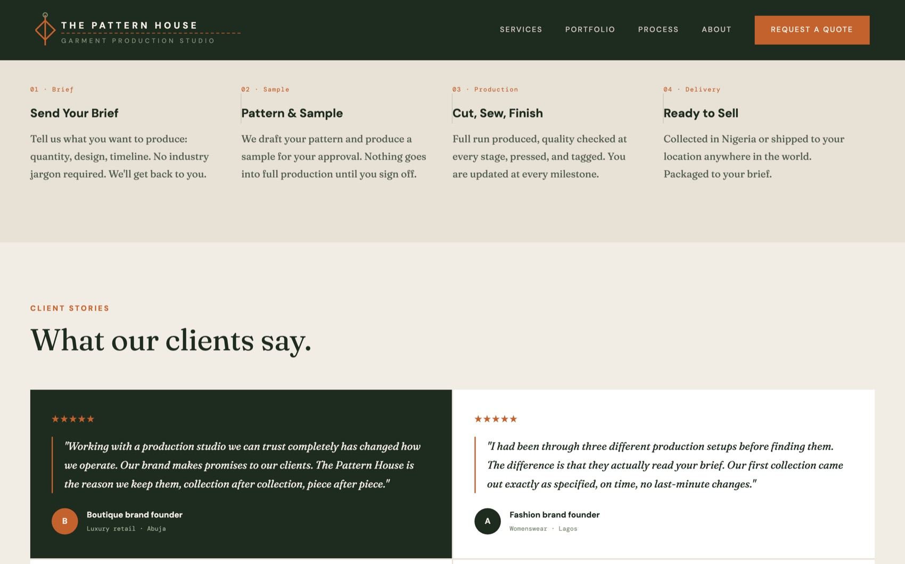
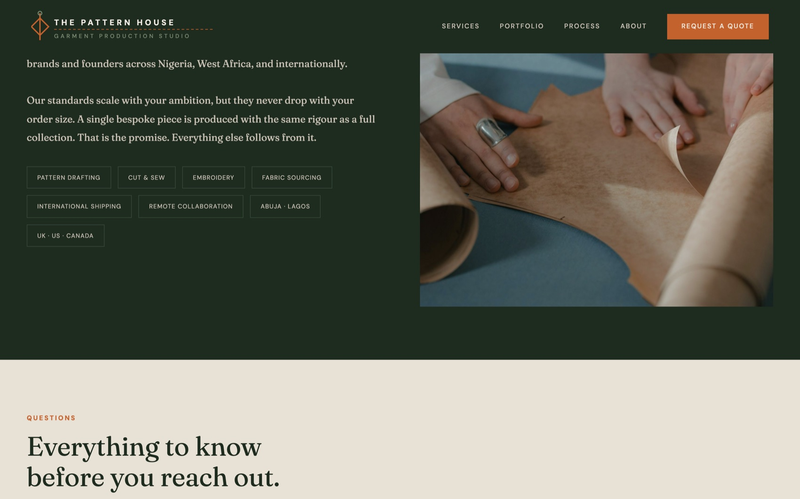

Every lead started with an interrogation, and nobody knew where it came from
Inquiries arrived unstructured and inconsistently qualified. Before anyone could price a job, there were rounds of back-and-forth just to learn the garment type, volume, timeline and location. There was no pipeline and no source visibility.
Real leads were landing with zero attribution, so the business could not answer the simplest growth question: where did this client come from?
Qualify at capture, not on the call
A qualification instrument
The inquiry form captures the exact operational data a factory needs to triage and quote, banded to the studio's real minimums. The first human touch is a quote conversation, not a discovery interview.
Mapped to how a factory sells
Submissions map onto a real 10-stage B2B production pipeline, from New Inquiry to Delivered and Closed Won.
A system of record, not an inbox
HubSpot as the record, with custom qualification properties, a warmed sending domain and a lifecycle process behind it.
Every lead carries its source
Traffic source, campaign and referrer travel with each inquiry, closing the gap that made early leads unreadable.
From form submit to the sales team in seconds
The "Request a Quote" form asks for what a factory needs to price without a phone call: brand or project name, contact details, country and region, a production description, and an approximate quantity banded to real manufacturing tiers.
On submit, a server-side function creates the CRM record, fires an instant branded acknowledgement email and fans the lead out to the sales team in real time. Capturing the CRM cookie, UTM parameters and referrer on the page means leads stop landing as "offline".



What I built:
- A production site on Astro, deployed to Cloudflare Pages through GitHub Actions, so every merge builds and ships.
- Service pages for the three offerings, a four-step process, portfolio and studio sections.
- A server-side inquiry workflow as a Cloudflare Pages Function, writing leads straight into the CRM.
- HubSpot with a 10-stage pipeline and custom qualification properties, connected to Zoho Mail and Zoho Cliq.
- An automated acknowledgement email via Resend and a real-time alert to the sales channel.
- GA4 and Google Tag Manager with a full lead-funnel event model and a generate_lead key event, plus Search Console.
- Structured data, a sitemap, and an AI-search layer that classifies traffic from AI answer tools as its own channel.
Who uses it, and how
Situation: has a collection in mind and needs a producer they can trust.
What happens now: sees the services, process and client proof, submits one form with their quantity and timeline, and gets an acknowledgement immediately.
Situation: needs to respond fast with a real price.
What happens now: the lead arrives in the pipeline and the team channel with the production detail and source attached, so the first reply can be a quote.
Situation: wants to know which channels actually bring clients.
What happens now: every inquiry is source-tagged, AI answer tools show as their own channel, and lead sources sit next to the deals in the operations platform.
The month the leads stopped
Inquiries stopped for a month. The instinct was "the form is broken". The evidence said otherwise: a rebuild had dropped the site out of Google's index.
On the way I found two silent failures. WhatsApp lead alerts were accepted by the provider but never delivered, and a trailing space in a hand-typed setting had broken the team chat alerts. I fixed both, ran an environment-hygiene sweep, and added a "How did you hear about us?" question, kept separate from automatic attribution, with AI assistants as an explicit option.
AI answer tools became the top self-reported source, named by 13 of 17 inquiries in one four-week window.
A funnel review that overturned my own redesign
When submissions dipped I brought design, data and engineering together on the numbers. The leak was reach, not the form: only about a third of homepage visitors ever reached it, while about 61% of people who started it finished.
Analytics was also overcounting leads by 2.4 times, because other forms fired the same event. And a redesigned form I had shipped produced zero leads in four days, so I rolled it back.
The same engine, extended
Hiring on the same code
Adding a role is one entry in a data file: listing, detail page, job-posting structured data, CV upload with validation and an automatic acknowledgement. Applicants stay out of the sales CRM, and a Ché Orika Group role runs on the same code.
Previews that cannot touch production
Preview deployments run in a sandbox that cannot reach the live CRM or alert channels.
First-party events into operations
The site beacons its funnel events into the studio's operations platform, where inquiries land as leads, then quotes, then orders, without being retyped.
Part of a faster sales cycle
Together with the operations platform, the system has supported 125 leads, 23 active clients and ₦21M+ in revenue, and cut the lead-to-client cycle from 45 days to 15.
Launch is the start of the product, not the end
The biggest wins came after launch, from reading the evidence instead of the instinct. A broken-looking form was an indexing problem. A dip was a reach problem. A redesign I believed in produced nothing, and the data made rolling it back easy. I now measure every change before I trust it.